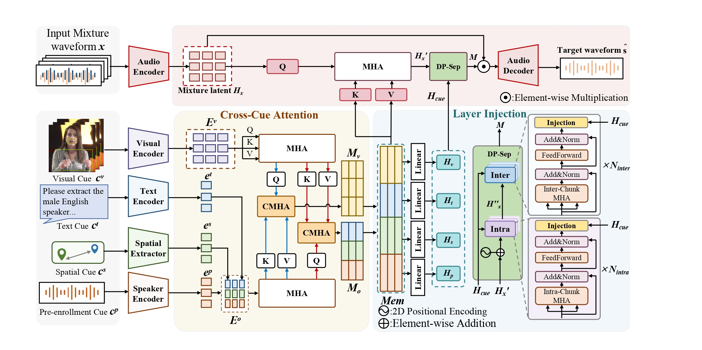
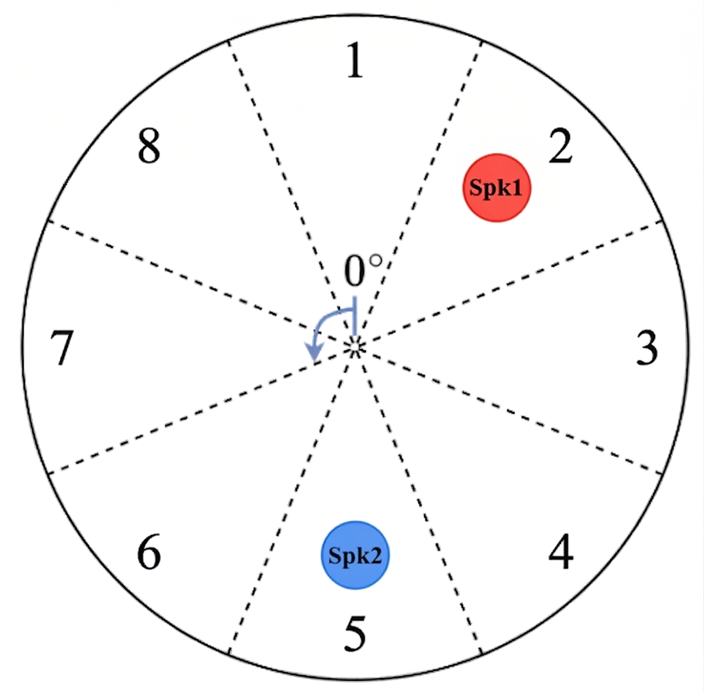
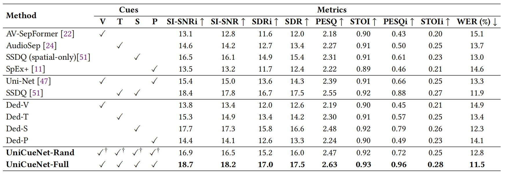
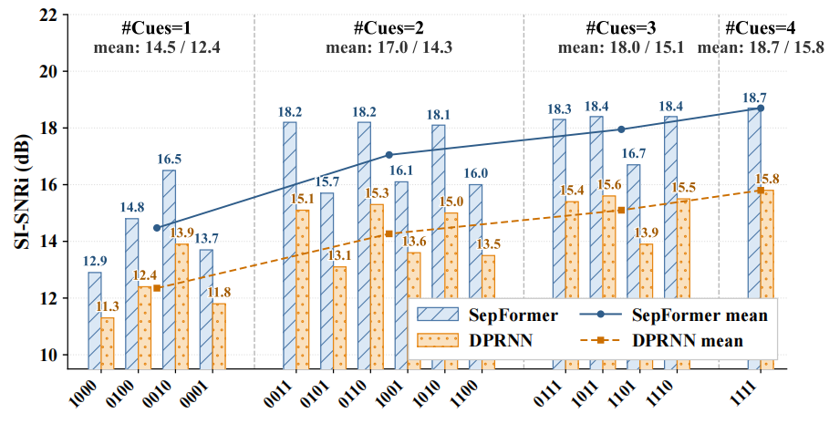

Shared Mixture
Speech-in-video mixtures are paired with synchronized multi-modal cues.
ACM MM 2026 Demo
Interactive demo page for one shared mixture, two target speakers, and fifteen prompt combinations over video, text, pre-enrollment, and spatial cues. In this demo, female corresponds to spk1 and male corresponds to spk2.
Target speaker extraction (TSE) can be guided by heterogeneous cues such as video, enrollment speech, text, spatial information, etc. However, current multi-cue evaluation remains fragmented across cue settings, preprocessing pipelines, and fusion interfaces. To enable fair and systematic comparison, we establish UniCue, a unified benchmark for multi-cue TSE. UniCue provides a speech-in-video mixture dataset with paired cues from four modalities and speaker-disjoint splits, standardizes cue construction and preprocessing, and introduces modality-specific stress settings that explicitly probe cue availability and cue reliability. To reduce interface bias, we instantiate UniCueNet, a shared reference conditioning interface on a SepFormer-style separator backbone. The interface projects heterogeneous cues into a common latent space, organizes them into a unified cue memory, and injects the separator through mixture-guided attention over the cue memory, and injects cue information via layer-wise gated injection. We additionally validate the interface on a second separator family and observe that, although absolute performance varies across carriers, the main subset-wise trends remain consistent. Experiments over all cue subsets and selected stress conditions reveal clear patterns of cue usefulness, cross-cue complementarity, and robustness, establishing a reproducible testbed for multi-cue TSE research. Code and data will be released. Demo: https://uni-cue.github.io/UniCue-demo/
The benchmark standardizes multi-cue conditioning around a shared interface and evaluates all non-empty cue subsets under unified preprocessing and stress settings.
Speech-in-video mixtures are paired with synchronized multi-modal cues.
visual, text, pre-enrollment, and spatial prompts are processed uniformly.
Heterogeneous cues are projected into one latent conditioning space.
Fifteen non-empty combinations are compared with the same extraction backbone.
Intro Figure

Method Overview Figure

The layout follows the academic project-page style of the reference demo while keeping the current 7-column matrix. The prompt cards below show the exact target cues, and the matrix lists the generated extraction results for every non-empty cue subset.
Target Prompt Overview
spk1 uses the female video and prompts, while spk2 uses the male video and prompts.

Spatial Sector Map
Spatial prompts specify the target azimuth sector around the array center. The sector ID indicates the relative target direction used by the spatial cue. Room size: 6m * 6m * 3m.
Prompt Combination Matrix
Each row reuses the same mixture and shows the generated outputs for spk1 and spk2 under one cue subset.
Qualitative results under controlled single-cue degradation. In each group, only the cue under test is perturbed while the remaining cues are kept intact, enabling direct comparison of cue reliability and cross-cue compensation. For clarity and space efficiency, only the results for spk1 are presented below.
Mouth Occlusion
Progressive occlusion of the mouth region in the visual cue.
Body Occlusion
Progressive occlusion of the body region in the visual cue.
Additive Noise
Noisy pre-enrollment reference from clean to low-SNR conditions.
Bandwidth Limitation
Bandwidth-limited pre-enrollment reference under clean, 8 kHz, and 4 kHz conditions.
Short Enrollment
Shortened pre-enrollment reference under progressively reduced durations.
Prompt Granularity
Text prompts from coarse to richer descriptions (G1-G4).
Some benchmark results from the paper.

Table 1: Overall comparison of representative baselines and UniCue variants under the shared protocol.

Figure 5: Deterministic evaluation over all 15 non-empty cue subsets with SepFormer and DPRNN.